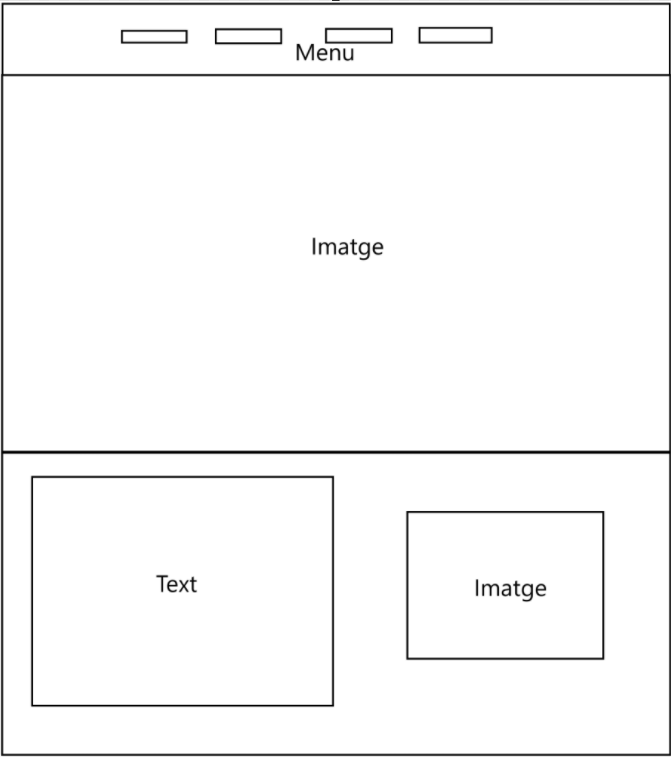

Vaig fer un disseny inicial de portafoli bàsic per al meu portfoli, amb una estructura senzilla i clara. Vaig provar algunes variacions, però al final em vaig decantar per aquest mateix disseny, ja que complia perfectament el seu propòsit i mantenia un equilibri entre funcionalitat i estètica.
Aquest disseny el vaig fer en un altre projecte d'HTML/CSS, però crec que per a un portafoli no és una bona idea. A més, pel meu nivell personal de programació web, fer-ho sense cap tipus d'ajuda ho veia bastant complicat. Per això, al final vaig acabar triant el primer disseny.